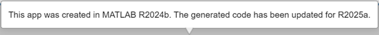

Compatibility Between Different Releases of App Designer
If you develop apps over multiple releases of MATLAB®, or if you edit or run a shared App Designer app in a different release than it was saved in, App Designer makes updates to your app to provide compatibility between the releases. If you encounter errors, you can open the app in App Designer to help resolve them.
Edit and Run Apps in Later Releases
If you create an app in one MATLAB and then upgrade to a later release, you can continue to edit and run the app. App Designer updates the app code for the later release and displays a message such as this one.

Edit and Run Apps in Earlier Releases
If you have an existing app that was created in one MATLAB release and you are using an earlier MATLAB release, you can open the app in App Designer for editing.
App Designer removes any functionality that is unsupported in the release you are using and provides an option to see the differences in the updated app. This removal might impact the app functionality. For example, if you load an app with a UI component in a release before the component was introduced, App Designer removes the component from the app.
If you try to run an app in an earlier release, you might encounter errors if the app uses functionality that is not supported in your release. To resolve the errors, open the app in App Designer and view the changes App Designer makes to the app.
Save Copy of App
App Designer provides two options to create copies of your app: Save Copy As and Save As. You can access both options from the Save button in the App Designer toolstrip. These options serve different purposes, and their behavior is also different.
To save a copy of your app to edit or share later, use Save Copy As. When you use this option, App Designer saves the copy of the app in the specified folder, but it does not replace the app in your current session.
To save a copy of your app and continue editing it, use Save As. When you use this option, App Designer saves the copy of the app in the specified folder and replaces the app in your current session.